|
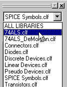
|
Choosing a Library
� Move the cursor to the library selection drop-down list and choose the "74ALS.clf" library.
The contents of this library will now be displayed in the part selection list.
|
|
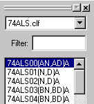
|
Selecting a Part
� Move the cursor to the part selection list and double-click on the item "74ALS00(AN,DN)A". Move the cursor into the schematic drawing area.
You will see a flickering image of the selected part following the cursor movement. This part does not become a permanent part of the schematic until you click the mouse button.
|
|
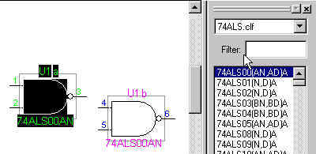
|
Placing a Device
� Move the cursor to an area just left of the parts palette and click on the schematic area to place a device.
� Move and click again to place a second device as shown. Order of placement is not important.
You can continue to place devices of the same type just by clicking on the desired locations. Notice that each device is automatically labeled with its part type and package assignment. This automatic assignment can be disabled if desired.
� Return to the normal pointer by pressing the spacebar or Esc.
|
|
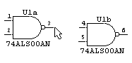
|
Wiring Pins
� Move the pointer cursor exactly to the end of the output pin on the left-hand device, as shown, then click and hold the mouse button.
|
|
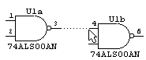
|
Wiring Pins (cont'd)
� With the mouse button still held down, move the cursor to the right, away from the output pin, so that it is positioned exactly over the end of the upper input pin of the right-hand device. Release the mouse button.
You will see the signal line flash briefly indicating that a connection has been made.
|
|
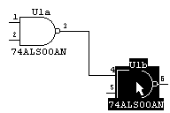
|
Moving Devices
� Click and drag on the right-hand device and move it to a new position, as shown.
Notice that the connected signal line stays attached and stretches to follow the device movements.
|
|
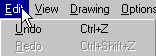
|
Using Undo/Redo
� Select the Undo command from the Edit menu.
� Select the Undo command again, and repeat until all items you have placed have disappeared.
� Now select the Redo command and repeat it until all edits are redone.
Most schematic editing operations can be undone and redone up to 10 levels. Major structural changes (like adding a page or hierarchy level) or any operation involving a dialog cannot be undone.
|
|
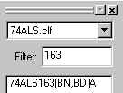
|
Part Selection by Name
� Click on the part "Filter" text box in the Parts Palette.
You will notice a text cursor starts to flash in this box.
� Enter the value 163.
� Double-click on the part "74ALS163(BN,BD)A" in the list.
|
|
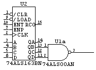
|
Automatic Pin Connection
� Move the cursor so that you can place the 74ALS163 device exactly as shown so that the QB and QD pins just touch the two inputs on the NAND gate.
� Click the mouse button to place the device at this point. (Depending on the size of your screen, you may need to use the scroll bar at the bottom of the schematic window to make room on the left.) You will notice the two pins flash to indicate a connection.
� Press the spacebar or Esc to return to the normal pointer.
|
|
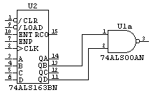
|
Automatic Pin Connection (cont'd)
� Click and drag the 74ALS163 device to the left and notice that right-angle lines maintain the connections between the two devices.
This auto-connection feature can be a convenient way of making connections between large devices, such as 8-bit registers. Just place them so the two sets of pins touch, then drag them apart and all the connections are made automatically.
|
|
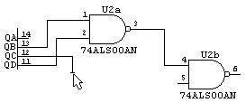
|
Wire Editing
� Using the pointer () tool, click and hold on the end of output pin QC on the 74ALS163.
� Move to the location shown and release the mouse button. (You may have to modify this procedure slightly depending on the exact positions of your symbols.)
Notice that a small perpendicular mark is placed at the end of the signal line. All unconnected line ends are marked this way automatically to simplify checking for missed connections.
� Click and hold on the end of the line just completed and connect it to the lower pin on the NAND gate.
|
|
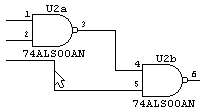
|
Wire Editing (cont'd)
Note: If you're using a small screen, you can hide the Parts palette at any time by double-clicking in the top left corner of the window. To re-display it, select "Parts Palette" from the Windows menu.
� Using the pointer () tool, click and hold at a point midway along the vertical line (or any line) just created.
Notice that you can drag this line segment sideways. With the pointer () tool, clicking at the end of a pin or line segment or at an intersection allows you to extend the signal. Clicking in the middle of a segment allows you to move that segment. The signal drawing tool (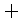) can be used to draw from any point.
|
|
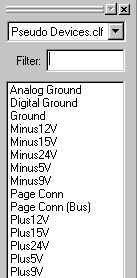
|
Power and Ground Connections
� If necessary, use the scroll bar at the bottom of the schematic window to expose some drawing area to the left of the 74ALS163 device. (If the device is too close to the left edge of the sheet, choose the Select All command in the Edit menu, then click and drag on any device symbol to reposition the entire circuit in a more suitable place.)
� Go to the library drop-down list and select the "Pseudo Devices.clf" library.
The term "pseudo device" is used in DesignWorks to refer to symbols that are edited like devices on the schematic, but are actually symbols used to modify signal connections. Examples of pseudo-devices are power and ground symbols, page connectors and bus breakouts. These items will be discussed in more detail later.
|
|
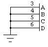
|
Power and Ground Connections (cont'd)
� Select the Ground item in the parts palette, then place one as shown.
� Click on the signal tool () in the tool bar and wire it to the 74ALS163 device as shown.
The Ground symbol automatically names the attached net "Ground" and causes it to be logically connected to all other ground nets in the circuit.
|
|
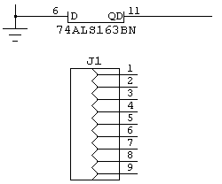
|
Connector Devices
� Select the "Connectors.clf" library and place a DB9F connector symbol below the 74ALS163, as shown. (Depending on the size of your screen, you may need to scroll the schematic window downwards.)
Connectors can be treated as a single unit, as in this case, or broken up into multiple symbols each with 1 or more connector pins on them. In the netlist, these will be treated as a single device.
|
|
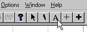
|
Connecting Signals by Name
� Click on the text (A) tool in the tool bar.
This tool is used to name devices and signals, edit device pin numbers, edit attribute text or create miscellaneous text notations, depending on where it is clicked. The cursor will initially take on a pencil shape (), allowing you to point accurately at the item to be named.
|
|
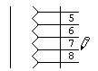
|
Connecting Signals by Name (cont'd)
� Click on the end of connector pin 7 using the pencil tool.
When you release the button a default name is displayed. Unless auto-naming is disabled, every signal is assigned a unique name as it is created. This name is normally only displayed on the schematic when explicitly requested.
� Enter the name "CLK" and press the Enter key to terminate text entry.
|
|
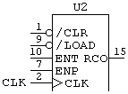
|
Connecting Signals by Name (cont'd)
� Move to the CLK input on the 74ALS163 device and repeat the same procedure, naming this pin "CLK" as well.
Notice that when you press the Enter key this time, the signal flashes to indicate a connection has been made with the other CLK label.
|
|
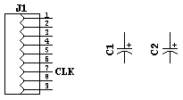
|
Discrete Components
� Using the library selection pop-up menu, select the "Discrete Devices.clf" library. Double-click on the item POLCAP and move the cursor into the schematic area.
� Press the arrow keys to orient the symbol vertically.
� Place two capacitors as shown.
Devices can be rotated to one of 8 orientations (the 4 compass points plus mirrored versions of each). Device text notations can optionally be rotated to match the device.
|
|
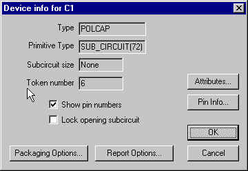
|
Setting Component Value
� Click on one of the capacitors just placed, so that it is highlighted.
� Choose the Get Info command from the Options menu, then click on the Attributes button. You can also right mouse button click on the capacitor and select Attributes from the drop-down menu.
|
|
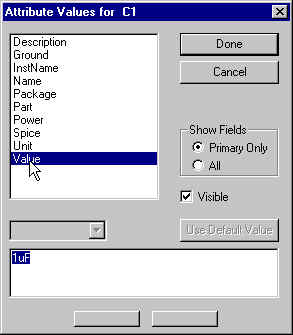
|
Setting Component Value (cont'd)
This dialog allows you to view and edit text "attributes" of a device. The list at the left shows the available field names. Clicking on one of these will display the associated value in the text box.
� Click on the item Value in the field list at left. Enter the value "1uF".
� Make sure that the Visible box is checked, then click on the Done button then the OK button.
� Repeat this procedure to assign the same value to the other capacitor.
The component value just entered will now appear adjacent to the device. It can be moved around independently, if desired. We will see in a later tutorial how to edit, rotate, hide and set text style for this text.
|
|
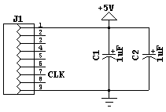
|
More on Power and Ground
� Go back to the "Pseudo Devices.clf" library. Place a Ground and Plus5V symbols.
� Wire them to the capacitors and connector, as shown. (Note: You may have to use the arrow keys again to return to normal orientation.)
The Ground and Plus5V symbols are a special class of pseudo-device known in DesignWorks as a "signal connector". They cause all like-named nets to be connected together, even across multiple pages. You can customize your own signal connectors for other types of common connections.
|
|
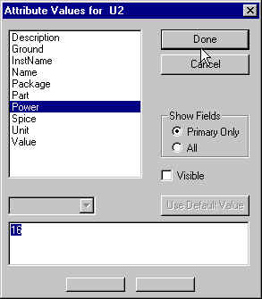
|
More on Power and Ground (cont'd)
� Click on the 74ALS163 device so that it is highlighted.
� Select the Get Info command from the Options menu, then click on the Attributes button.
� Select the field Power in the attribute field list and note the field value.
� Select the field "Ground".
You will notice that the fields named "Power" and "Ground" contain the numbers of the power supply pins for this device. You can add other pins to this list, if needed, separated by commas. This allows you to create power and ground connections without showing them explicitly on the schematic. The standard power and ground connections are included in all integrated circuit parts in the DesignWorks libraries. This is primarily of interest when generating netlists for PCB layout using DesignWorks Professional.
|
|
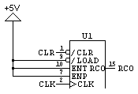
|
More on Power and Ground (cont'd)
To complete the counter wiring:
� Add a Plus5V symbol and wire it as shown.
� Apply names to the CLR and RCO counter pins, as shown.
|
|
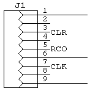
|
More on Power and Ground (cont'd)
To complete the connector wiring:
� Using the text () tool, apply names CLR and RCO to the connector pins shown.
� Using the () tool, draw a wire from the unconnected NAND gate output to connector pin 6.
|
This completes the tutorial section "The 5-Minute Schematic".
You may wish to use the Save As command from the File menu to save the completed example at this point.
")